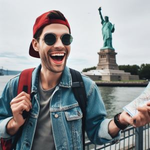

Kevinsouriya

Kevinsouriya est l'âme du groupe, un véritable globe-trotteur. Avec sa soif insatiable de découvrir de nouveaux horizons, il est toujours à la recherche
de la prochaine aventure exaltante. Que ce soit à gravir des montagnes, à plonger dans les fonds marins, ou à explorer des marchés animés, Kevinsouriya
est toujours partant pour de nouvelles expériences. Son sens de l'humour et son esprit aventureux sont contagieux, et il est le moteur qui pousse le
groupe à repousser ses limites.
Mathias

Mathias le membre éclairé du trio, possède une passion innée pour la découverte des cultures locales. Il s'imbibe de chaque destination,
s'immergeant dans les traditions, goûtant la cuisine locale et dialoguant avec les habitants. Grâce à son sens profond de l'empathie, Mathias
crée des liens uniques partout où il va, faisant de chaque voyage une aventure humaine enrichissante. Il est également le photographe du groupe,
capturant des moments précieux qui racontent l'histoire de leurs aventures.
Valentin
Valentin est le pilier calme et réfléchi du groupe. Avec son tempérament posé, il apporte un équilibre précieux aux aventures frénétiques de ses amis.
Il gère les réservations et assure la sécurité de l'équipe en voyage. Il est également un fin gourmet, toujours à la recherche des meilleures expériences
culinaires que chaque destination a à offrir. Sa sérénité inébranlable lui permet de gérer les défis inattendus en voyage, rassurant le groupe et assurant
une expérience paisible et mémorable.